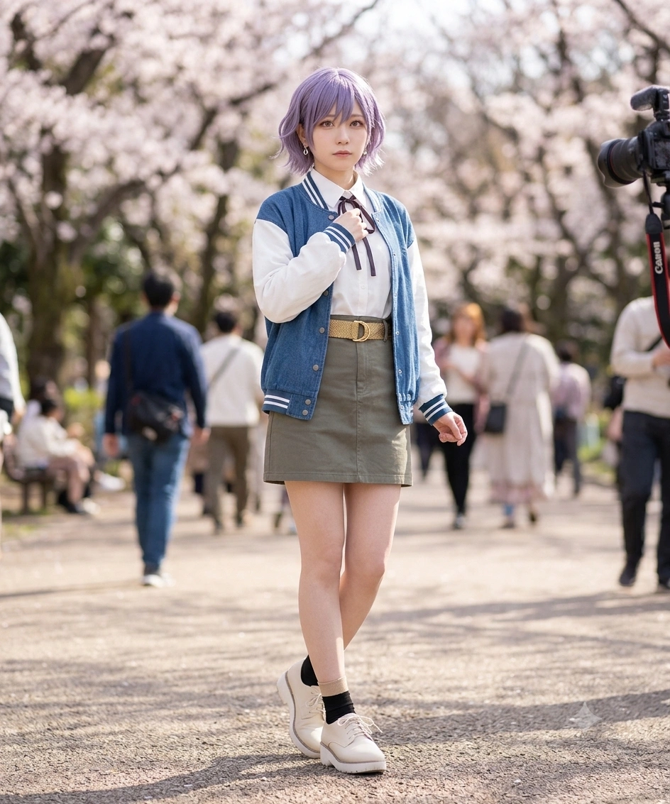
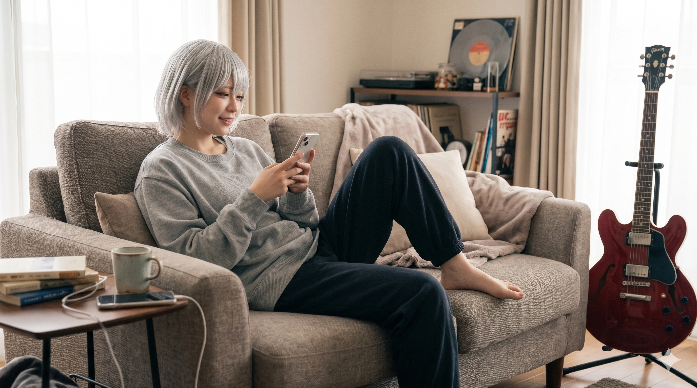

1. 개요
"저기... 애음 쨩, 인하 쨩... 그리고 효빈대 학우 여러분... 나랑 평생(一生) 학교 다닐래...? 이 돌멩이, 고송동 화단 3미터 아래에서 파낸 건데 마음의 상처에 붙이는 펭귄 반창고랑 같이 줄게..." — 고다솔
"나를 통해 완벽한 인싸로 거듭나라! 천조마트의 중심에서 스포트라이트를 외치다! ...어, 잠깐만! 내가 총학생회장 후보(정후보)였잖아?! 왜 다솔링이 회장이고 내가 부회장인 건데에에!!" — 천애음
"대학? 시시해서 안 갔어. 인키(시인하), 배고파. 말차 파르페 사줘. 다솔, 재미있는 여자아이(おもしれー女の子)." — 감라나
"여기는 내(長崎) 구역이야. 우리 다솔 쨩이나 빈주 도시철도를 건드리는 나쁜 어른들은... 내가 끝내줄게(私が終わらせてあげる). 애음 쨩, 또 '소연링'이라고 부르면 앰프 전원선 뽑아버린다?" — 나소연
"하아? 누가 너희 따위랑 친하대? 난 그냥 다솔이가 노래할 수 있는 무대를 만들고 싶을 뿐이야. ...야 유채나 씨!! 내 앞에서 붉은 마이크 들고 '다이스키' 외치지 마!! 내 안의 이상한 스위치 켜진단 말이야아아!!" — 시인하
효빈광역시와 인접 덕빈북도 빈주시를 무대로 활동하는 2004년생 동갑내기 4인방(고다솔, 천애음, 나소연, 시인하)과 2005년생 천재 막내(감라나)로 구성된 5인조 인디 멜로 코어·감성 록 밴드. 멤버 전원이 일본의 미디어 믹스 프로젝트 《BanG Dream! It's MyGO!!!!!》의 주역 캐릭터들과 이름 한자·발음(고다솔=高松, 천애음=千早 愛音, 감라나=要 楽奈, 나소연=長崎 そよ, 시인하=椎名 立希), 출신 행정구역(고송동, 천조읍, 장기구 월삼동, 입희동), 악기 세팅, 그리고 피와 눈물과 개그가 뒤섞인 파란만장한 서사까지 200% 동기화된 완벽한 3차원 현신 그룹이다.
선배 밴드들(애프터글로우, 포핀☆스타, 로젤리아, 모르포니카)이 처음부터 끈끈한 우정이나 프로페셔널한 목표 아래 뭉쳤던 것과 달리, 이 『미아(迷子 / MyGO!!!!!) 밴드』는 멤버 전원이 각자의 뼈아픈 흑역사(중학교 첫 밴드의 붕괴, 영국 런던 유학 대탈주, 외할머니 라이브 하우스 폐점, 부모님 이혼과 가면 연기, 친언니에 대한 열등감)를 안고 덕빈북도 빈주시의 빈주중앙고등학교로 모여들어 서로 할퀴고 도망치고 멱살을 잡은 끝에 탄생한 '길 잃은 아이들의 생존 공동체'다.
고등학교 졸업 후에는 효빈-빈주 간 광역전철 미직결(왕복 4시간 통학 지옥) 문제와 각자의 성적·진로에 따라 효빈대학교(고다솔·천애음), 엽월대학교(나소연), 평안명대학교(시인하), 그리고 대학 미진학 전업 유튜버(감라나)로 뿔뿔이 흩어졌으나, 오히려 고다솔과 천애음이 2025학년도 제98대 효빈대학교 총학생회장·부총학생회장에 당선되고 천조마트 안천본점 지하에 초호화 합주실이 마련되면서 그 어느 때보다 막강한 캠퍼스·상권 영향력을 행사하고 있다.[1]원래 관종 천애음이 총학생회장(정후보)을 하고 고다솔을 부회장으로 세우려 했으나, 이공계 학우들의 몰표와 시인하의 협박, 그리고 김시연의 감언이설("부회장이 축제 무대 센터 MC를 독점한다")에 넘어가 마감 10분 전 다솔이를 정후보로 올리고 본인이 부회장으로 내려가 84.7% 득표율로 당선되었다!
2. 멤버 및 핵심 관계자 소개 (3D 현신)
보컬 고다솔이라는 절대 성역(聖域)을 중심으로 4명의 개성 강한 맹수·관종·계략가·길고양이가 얽혀 돌아가는 기묘한 생태계를 자랑한다.
2.1. 평생 함께할 미아 5인방 (Core 5)

북구 고송동(高松洞=타카마츠) '고송나루역 마이고 아파트'에 거주하는 성골 영주님. 효빈대 천문학과(본전공)·생명공학과(복수전공) 재학생이자 무려 제98대 효빈대학교 총학생회장이다! 평소엔 눈도 못 마주치며 야전삽으로 땅을 3m 파서 돌멩이를 줍고 공벌레 12마리를 키우며 펭귄 반창고를 나눠주지만, 마이크만 잡으면 영혼을 찢는 우타코토바(낭독 보컬)를 터뜨린다. 155cm에 은근히 알찬 중간 글래머(B81 B컵) 체형으로 천애음을 울렸으며, 합법 얀데레 김시연조차 순한 양으로 만드는 마성의 소동물이다.

빈주시 가원구 천조읍(千早邑=치하야) 향토 유통 공룡 『(주)천조유통(천조마트)』 대표이사의 외동딸. 본명 한자부터가 천애음(千愛音=아논)이다! 중학교 전교회장 후 허세로 영국 런던 유학을 갔다가 영어에 털려 1학기 만에 야반도주('그레이트 브리튼 대탈주')한 흑역사가 있다. 현재 효빈대 정외과 재학생 겸 제98대 총부학생회장이자 빌리빌리 50만 여신. 아빠 법인카드로 긁은 68만 엔짜리 ESP 울트라톤으로 윤재훈의 각목을 두 동강 낸 여장부지만, 160cm·B78(A컵)이라 감라나(B80)에게마저 추월당한 팀 내 유일한 단독 빈유다.

북구 청능동 구 『SPACE 효빈』 오너 도기선(시후네) 여사의 외손녀이자 구독자 75만 프로 기타 크리에이터. 고3 때 전교 상위권 성적에도 "대학, 시시해. 기타 칠래"라며 쿨하게 미진학했다. 선천적 은백발 허쉬컷에 172만 엔짜리 빈티지 ESP 포트벨리로 초절정 속주를 날리는 인간 길고양이다. 고교 졸업 후 말차 파르페 영양분으로 원작보다 +3cm 더 자란 153cm·B80(꽉 찬 B컵) 베이글 체형으로 폭풍 성장해 천애음을 절망시켰다. 스마트폰 타자를 못 쳐 단톡방에 [봤] [어] 두 글자만 치며, 비글 남동생 감라온만 보면 질색하며 시인하네 집으로 가출한다.

빈주시 장기구(長崎區=나가사키) 월삼동(月三洞=츠키노모리) 90평 펜트하우스에 사는 영 앤 리치 아가씨. 고교 시절 크라이식 부활에 매달리느라 까먹은 내신 때문에 효빈대 대신 실기 80%인 청엽구 등동 엽월대 관현악과(콘트라베이스 전공)에 수석 입학해 기숙사 생활 중이며 음악분과 총동아리 연합장을 맡고 있다. 162cm 최장신에 B89(F컵)의 팀 내 최강 글래머이자 15kg 콘트라베이스로 단련된 물리력 1티어다. "왜 봄볕을 한 거야!!" 사태 이후 가식을 벗고 천애음을 구두 굽으로 조련하면서도, 매주 수요일 새벽 직접 끓인 미네스트로네 스프를 보온병에 싸 들고 고다솔에게 조공 가는 실질적 엄마다.

북구 입희동(立希洞=타키) 성골이자 『RiNG 효빈점』 시니어 스태프. 중3 겨울 상처 입은 고다솔을 지키려 3박 4일 단식 투쟁 끝에 빈주중앙고 기숙사로 따라갔고, 밤샘 작곡으로 고1 말 기숙사 성적 컷 탈락 위기에 처하자 고2 때 빈성구 중앙동3가 원룸에서 자취했다! 수능 최저가 모자라 실기 100%인 평안명대 실용음악과에 수석 입학해 갤럭시 홀 행사음향담당으로 군림 중이다. 156cm·B88(E컵)의 숨은 베이글녀이자 중증 판다·애프터글로우 덕후며, 최근 동일 성우(하야시 코코) 법칙과 유채나의 전염으로 인해 간헐적으로 '유키 세츠나화("스칼렛 트윈 페달 스톰!!")'가 터져 고통받고 있다.
2.2. 가족 및 핵심 후원 세력 (Extended Family & Allies)


이웃 도시 오현주 계성시장은 집무실에 ESP 포트벨리를 모셔둔 중증 카나메 라나 오시로, 호두 동상 벤치에서 자던 진짜 감라나를 영접하고 사비로 말차 파르페와 소바를 풀코스 조공하는 물주 언니다. 반면 오리지널 가족인 남동생 감라온(10년생, 고송중 3학년)은 누나와 똑같은 선천적 은발에 시베리안 허스키급 비글미를 지녀, 누나의 한정판 말차 푸딩을 훔쳐 먹고 이펙터 노브를 돌려놓아 천하의 감라나가 "샤아아악!!" 야생 하악질을 하며 가출하게 만드는 주범이다.
3. 밴드 결성 및 피와 눈물의 역사
처음부터 반짝이던 밴드가 아니라, 한 번 산산조각 났던 파편들과 엉뚱한 불순물(?)들이 빈주시에서 기적처럼 충돌하며 빚어낸 눈물의 재결합 서사다.
3.1. 중학교 첫 밴드(크라이식)의 붕괴와 빈주중앙고 기적의 5인 집결
중학교 시절, 화단에서 공벌레와 돌멩이만 줍던 외톨이 소녀 고다솔은 고송교차로 육교 위에서 벚꽃잎을 잡으려다 인연을 맺은 부잣집 피아노 소녀(사키코 포지션)의 주도로 시인하, 나소연, 기타리스트 소녀(무츠미 포지션)와 함께 생애 첫 중학교 밴드(CRYCHIC 포지션)를 결성했다. 그러나 첫 라이브 직후 리더 소녀가 집안의 몰락(168억 사기 피해 부도)으로 인해 다솔에게 "응석부리지 마!"라는 모진 말을 남기고 탈퇴하면서 밴드는 공중분해 되었고, 다솔은 모든 죄책감을 혼자 뒤집어쓰고 마음의 문을 닫았다.
그 직후인 2019년 겨울, 효빈시와 빈주시에 사는 5명의 소녀가 각기 다른 기상천외한 사유로 덕빈북도 빈주시의 빈주중앙고등학교(원작 하네오카 여학원과 교복이 똑같은 학교!) 한곳으로 모이는 역사적인 사건이 벌어진다!
- 고다솔 (아버지 파견 이주): 해양생물학자인 부친 고재민 박사가 빈주시 내수면·하구 생태 연구소로 3년간 파견 발령을 받아 가족 모두가 빈주시로 임시 이사하며 진학했다.
- 시인하 (다솔 수호를 위한 3박 4일 행인두부 단식 투쟁 & 원룸 자취): 상처 입은 다솔이를 낯선 빈주시에 혼자 두면 부서질까 봐 눈이 뒤집힌 인하가 부모님 앞에서 3박 4일간 물과 행인두부 젤리만 먹는 철야 단식 투쟁을 벌여 빈주중앙고 기숙사(정진관)로 따라 입학했다!(다솔이 앞에서는 "집안 사정으로 온 거고 방음실이 좋아서 온 거다!"라고 시치미를 뗐다.) 이후 밤마다 사감 몰래 이불 속에서 다솔이 줄 데모 곡을 찍느라 수업 시간에 자다가 고1 2학기 말 내신 성적 추락으로 기숙사에서 퇴사당할 위기에 처하자, 주말마다 무궁화호를 타고 효빈시 『RiNG』에서 알바비를 보태는 조건으로 고2 때 학교 코앞인 빈성구 중앙동3가에 방음 복층 원룸을 얻어 자취 독립을 감행했다!
- 나소연 (크라이식 부활 집착 위장 전입): 원래 장기구 월삼동의 에스컬레이터식 명문 '월삼여고'로 진학해야 했으나, 옛 리더와 다솔이가 가원구 빈주중앙고 쪽으로 간다는 첩보를 입수하고 "내가 반드시 그 밴드를 부활시키겠어"라는 집념 하나로 바쁜 어머니를 설득해 가원구 오피스텔로 위장 전입(?)까지 하며 입학했다.
- 천애음 (영국 런던 유학 1학기 대탈주 후 5월 편입): 가원중 전교회장 출신으로 "천조읍은 내 스케일에 좁다!"며 영국 런던 팰리스 칼리지로 유학을 떠났으나, 본토 영어 속도에 말문이 막히고 자기 이름(Anon)을 "Ann?"이라고 부르며 투명 인간 취급하는 고독을 견디지 못해 10학년 1학기도 못 채우고 히드로 공항으로 야반도주('그레이트 브리튼 대탈주')했다. 동창들의 수군거림을 피해 5월 중순 빈주중앙고 고다솔의 바로 뒷자리로 편입해 들어왔다.
- 감라나 (선천적 은백발 유전학 논문 구출 사건): 1년 뒤 어머니의 빈주 패션 기업 프로젝트 이주를 따라 입학했다. 입학 첫 주 선천적 백금발(은발)을 탈색으로 오해한 학생주임에게 걸려 강제 흑발 염색 징계를 받을 뻔했으나, 복도를 지나가던 선배 고다솔이 교무실로 난입해 『OCA4 유전자 변이에 따른 선천적 백색 모발 발현 논문』을 15분간 속사포로 읊어 구출해 주면서 다솔을 "재미있는 여자아이"로 점찍고 합류했다.
3.2. 2시간 56분 31초 추격전, 『봄볕』 돌발 발사, 그리고 『우타코토바』
전학 온 천애음이 "밴드 보컬이던 다솔이를 꼬시면 내가 학교 인싸 센터가 될 수 있다!"는 속물적 계산으로 접근했다가 분리수거장에서 넘어져 다솔이에게 펭귄 반창고를 받고, 시인하의 팩폭에 터진 런던 트라우마를 토모리해수욕장 수족관에서 다솔이와 공유하며 두 사람은 서로의 구원자가 되었다. 이어 작곡 강박증으로 72시간 무수면 상태에 빠져 도망친 시인하를 애음이 '2시간 56분 31초' 동안 잠복해 기다린 끝에 빈주시 골목길 추격전을 벌여 나란히 넘어지고 다솔이가 바다생물 반창고를 붙여주며 첫 라이브를 성사시켰다.
그러나 첫 라이브 무대에서 감라나가 옛 밴드의 성역이던 『봄볕(春日影)』을 돌발 연주하자, 객석의 옛 리더는 오열하며 도망쳤고 대기실에서 나소연이 "왜 봄볕을 한 거야!!!!! (なんで春日影やったの！？)"라고 사자후를 터뜨리며 잠적해 버렸다. 소연이 자신과 라나를 장기말로 이용만 했다는 진실에 애음마저 상처받아 나가버리자, 절망한 다솔이는 홀로 라이브 하우스 무대에 서서 무반주 시 낭독회를 강행했다!
이 처절한 외침에 감동한 감라나가 초코 소라빵을 삼키고 무대로 난입해 즉흥 반주를 깔고 시인하를 드럼 석으로 끌고 왔으며, 다솔이의 진심에 복귀한 천애음이 단신으로 장기구 월삼동 나소연의 펜트하우스로 쳐들어가 "소연 씨도 속 시커먼 인간이긴 했구나~!"라고 도발해 소연을 공연장으로 끌어냈다. 그리고 전주가 흐르는 가운데 다솔이가 무대 아래로 다이빙해 소연의 손목을 잡고 애음이 위에서 끌어올려 강제로 베이스를 메게 한 뒤 터뜨린 눈물의 무반주 낭독곡 『우타코토바(詩超絆)』를 통해, 다섯 명의 미아들은 비로소 가식 없는 진짜 밴드 『MyGO!!!!!』로 다시 태어났다.
3.3. 광역전철 미직결(왕복 4시간) 지옥이 낳은 3개 대학 분산 & 기숙사 라이프
고3 입시 시즌이 되자, 효빈광역시와 덕빈북도 빈주시 사이의 냉혹한 철도망 현실 고증이 멤버들의 대학 진학과 거주 형태를 결정지었다. 효빈시권의 『빈효선 광역전철(#6677CC, 천주시 고남역 종착)』과 빈주시권의 『빈주권 광역철도(#005BAC, 부진역 시종착)』가 중간 구간에서 아직 직결되지 않고 끊어져 있어, 두 도시를 오가려면 일반철도(ITX-새마을·무궁화호)와 도시철도를 다중 환승하며 하루 왕복 3시간 반~4시간을 길바닥에 버려야 하는 통학 불가 구조였기 때문이다![2]이 미직결 단절 구간 때문에 나소연(월삼동 본가 → 효빈시 남부 청엽구 등동 엽월대)과 천애음(천조읍 본가 → 효빈시 서구 당선동 효빈대)은 통학을 포기하고 기숙사에 입사했으며, 현재 미아 밴드 전원에게 '빈효선-빈주광역철도 직결 추진'을 공약한 더불어민주당 지지는 생존의 문제다!
결국 이과 우등생 고다솔(운석과 펭귄·공벌레를 연구하려고 효빈대 천문학과·생명공학과 복수전공 진학! 24년 부친 파견 종료로 고송동 마이고 아파트 본가 귀환)과 내신을 독하게 챙긴 천애음("경영학과 가면 누가 날 봐줘? 센터에 서려면 정외과지!"라며 효빈대 정치외교학과 진학 후 기숙사 '희다관' 입사)이 효빈대로 향했다. 반면 고1~2 때 크라이식 재결성에 매달리다 내신을 까먹은 나소연은 실기 80% 반영인 명문 사학 엽월대학교 관현악과(콘트라베이스)에 수석 합격해 15kg 악기 운반과 수면 시간 사수를 위해 청엽구 해안가 기숙사 1인 특실에 입사했고, 밤샘 작곡으로 수능 최저를 못 맞춘 시인하는 다솔이를 남학생들과 천애음으로부터 지키기 위해 대학 미진학 선언을 철회하고 실기 100% 전형인 북구 사연동 평안명대학교 실용음악과에 5분 즉석 작편곡 만점(전체 수석)으로 합격해 입희동 본가로 귀환했다. (1년 뒤 막내 감라나는 전교 상위권 성적에도 "대학, 시시해. 할머니처럼 기타 칠래"라며 백지 원서를 내고 청능동 외할머니 저택으로 돌아왔다.)
3.4. 제98대 효빈대 총학생회장 추대 쿠데타와 84.7% 무혈입성
2025학년도 효빈대학교 총학생회 선거에서 원래 정후보(회장) 자리는 관종 천애음이 노리던 것이었고, 다솔이는 자연대 표를 끌어올 부회장 러닝메이트였다. 그러나 선대위 연석회의 날 애음이 인싸 공약을 떠드는 동안 구석에서 광물 조각을 돋보기로 보던 다솔이가 일어나 "밤하늘의 1등성(인싸)만 빛나는 게 아니라 6등성과 성간 물질(아싸·연구생)도 모두 우주의 일부라고 배웠어요... 실험실에서 밤새우다 다친 손가락에 제가 모은 펭귄 반창고를 전부 붙여드릴게요..."라고 떨리는 목소리로 말하자, 만년 소외에 서러워하던 자연대·공대 학생회장들이 오열하며 "우리의 총학생회장은 고다솔 학우뿐이다!!"라며 쿠데타를 일으켰다!
여기에 평안명대에서 원정 온 시인하가 "다솔이가 정후보 아니면 유세장 음향선 다 뽑아버린다!"고 협박하고, 사과대 회장 김시연이 "애음아, 회장은 본부랑 결재 싸움만 해야 하지만 부회장은 대동제 무대 센터 MC를 독점할 수 있어"라고 꼬드기자 단순 세포 애음이 마감 10분 전 정·부후보 칸을 맞바꿨다. 이후 베르데 홀 광장 합동 유세에서 다솔이가 학우들의 고충을 무반주 현대시(우타코토바)처럼 절절하게 낭독해 5천 학우를 울리면서, 다솔(정)-애음(부)의 『미아들의 별빛』 선본이 득표율 84.7%라는 역대 최고 기록으로 무혈입성했다.
4. 지명·철도 역세권 성골 매칭과 내부 대환장 문화
4.1. 고송동·천조읍·청능동·장기구 월삼동·입희동 5대 성지 완벽 고증
효빈광역시 북구와 덕빈북도 빈주시 일대는 MyGO!!!!! 5인방의 이름 한자가 그대로 행정구역과 아파트, 마트 이름으로 박혀 있는 성지다.
- 고다솔 (타카마츠 토모리 / 高松 燈): 효빈시 북구 고송동(高松洞 = 타카마츠) 출생 + '고송나루역 마이고 아파트' 거주 + 토모리해수욕장 펭귄 생태 홍보대사! (성씨 '고(高)'와 소나무 '솔(松)'을 합치면 정확히 고송=타카마츠가 된다!)
- 천애음 (치하야 아논 / 千早 愛音): 빈주시 가원구 천조읍(千早邑 = 치하야) 천조리 출생 + 본명 한자 천애음(千愛音) + 부친의 『천조마트』 & 청엽구 88층 『아논타워』!
- 감라나 (카나메 라나 / 要 楽奈): 효빈시 북구 청능동 구 『SPACE 효빈』 저택 거주 + 이웃 계성시 청년무상식당 '라나의 키친' 명예 점장!
- 나소연 (나가사키 소요 / 長崎 そよ): 빈주시 장기구(長崎區 = 나가사키) 월삼동(月三洞 = 츠키노모리) 펜트하우스 거주 + 빈주 1·2호선 장기역 명예 역장!
- 시인하 (시이나 타키 / 椎名 立希): 효빈시 북구 입희동(立希洞 = 타키) 1·2호선 입희역 '타키 캐슬' 거주 + 효빈시티투어버스 T10 노선(#7777AA) 명예 홍보대사!
4.2. 천애음의 'AE-EUM TOKYO' 노출 의상 대참사와 감라나의 가위 반갈죽
재결합 직후 사흘 뒤 라이브를 앞두고 천애음이 밴드명과 무대 의상을 독단적으로 맡았을 때 터진 대참사다. 애음이 들고 온 밴드명 후보가 죄다 '애음즈', '러블리 애음과 아이들', 'AE-EUM TOKYO(애음 도쿄)'여서 시인하와 나소연에게 1초 만에 기각당한 데 이어, 뷰티 유튜버(냐무) 채널을 보고 사 온 의상이 배꼽과 등이 훤히 파인 초고노출 시스루 천 쪼가리여서 소연에게 "거의 알몸 수준인데 이게 밴드 의상이야?"라는 팩폭을 맞았다.
결국 전원이 밤샘 재봉틀 노역을 하게 되었는데, 아침형 인간인 나소연이 "난 피부 관리 때문에 밤샘은 절대 안 해"라며 침실로 들어가 베르가모트 아로마를 켜고 꿀잠을 자는 사이, 가위를 들고 어슬렁거리던 감라나가 "소연 치마, 길어서 불편해 보여"라는 한마디와 함께 소연의 우아한 롱 원피스 밑단을 사선으로 싹둑 반토막(반갈죽) 내버렸다! 다음 날 아침 반갈죽 난 자기 옷과 그 안쪽에 애음이 몰래 박아넣은 핑크색 [AE-EUM TOKYO] 라벨을 본 소연의 비명 소리에 펜트하우스 경비실이 비상 출동할 뻔했다(훗날 이 반갈죽 의상은 월삼여고 선배 기유호 대표의 손길을 거쳐 하이엔드 언밸런스 펑크 록 드레스로 기적의 부활을 이루었다).
4.3. +3cm 폭풍 성장(B80)이 부른 천애음 '유일무이 단독 A컵' 처형식
외모, 재력, 인싸력, 학벌까지 다 가진 천애음(160cm, B78 A컵)에게 유일하게 돈으로 해결 못 한 눈물겨운 콤플렉스가 바로 가슴 사이즈다. 하필 밴드 내에서 매일 붙어 다니는 나소연(162cm, B89 F컵)과 시인하(156cm, B88 E컵)가 폭력적인 투톱 거유 라인인 데다, 여름방학 토모리해수욕장에 놀러 갔을 때 자신과 같은 빈유 동맹인 줄 알았던 단짝 고다솔(155cm)마저 래시가드 속에 B81(꽉 찬 B컵)의 알찬 중간 글래머 체형을 숨기고 있었다는 사실이 밝혀져 애음이 1차로 오열했다.
결정타는 막내 감라나였다. 중학교~고1 때까지만 해도 150cm 땅콩 체구였던 라나가, 시인하와 천애음에게 매일 얻어먹은 특대형 말차 우유 파르페의 영양분이 집중되면서 성인이 된 현재 원작보다 +3cm 더 자란 153cm에 고다솔과 맞먹는 B80(꽉 찬 B컵)-W55-H81의 베이글 체형으로 폭풍 성장해 버린 것이다! 이로써 5명 중 천애음 혼자만 팀 내 유일무이한 '단독 A컵(절벽)'으로 고립되는 비극이 완성되었다. 애음이 "야 감라나!! 말차 파르페에 무슨 짓을 한 거야?!"라고 절규하면 라나는 무심하게 "말차, 많이 마시면 커. 애음은 편식해서 작은 거야"라고 팩폭하고, 나소연은 생긋 웃으며 "어머 애음 쨩, 숨 쉴 때 3겹 패드 돌아갔어. 고쳐줄까?"라며 확인 사살을 날린다.
4.4. 시인하의 기괴한 '유키 세츠나화(化)' 진행과 공벌레 유리병 보은 대참사
시크한 외로운 늑대 드러머 시인하를 괴롭히는 양대 시련이다.
- 본인도 통제 못 하는 기괴한 '유키 세츠나화(化)' 증상: 시이나 타키와 2대 유키 세츠나의 담당 성우가 모두 하야시 코코로 동일하다는 세계관의 법칙 때문에, 인하가 매일 타는 효빈시티투어버스 T10 노선(#7777AA, 타키 테마)과 급행버스(#D81C2F, 세츠나 테마)의 스테레오 안내방송 세뇌, 그리고 효빈대 무지개 동호회 유채나(세츠나 본체)와의 접촉 감염이 겹치며 인하의 뇌 회로 일부가 세츠나의 중2병 열혈에 잠식당했다! 평소엔 "하아? 시끄러워"라며 쿨한 척하다가도, 입희역 앞에서 두 버스가 나란히 서거나 유채나가 옆에서 선창을 하면 자기도 모르게 눈이 스칼렛 빛으로 번뜩이며 "내 안의 다이스키(大好き)가 폭발한다아아!! 스칼렛 트윈 페달 스톰!!"이라고 포효해 버리고, 3초 뒤 이성이 돌아와 수치심에 자기 머리를 스틱으로 쥐어박는다(이 모습은 천애음의 틱톡에 박제되어 조회수 120만 뷰를 찍었다).
- 고다솔의 '특대형 공벌레 5마리 유리병' 보은 대참사: 대학 진학 후 인하가 고교 시절 자신 때문에 단식 투쟁을 벌여 빈주중앙고로 따라왔다는 진실과 평안명대 '구소쿠무시 연못'에서 자신을 구해준 것에 깊이 감동한 고다솔이, 평생의 고마움을 전하겠다며 밤새 고송동 뒷산을 파헤쳐 채집한 '등껍질이 반짝이는 특대형 공벌레(쥐며느리) 5마리가 든 유리병'을 연습실로 들고 와 "인하 쨩... 공벌레들이 인하 쨩을 평생 지켜줄 거야..."라며 건넸다! 사실 벌레를 세상에서 제일 무서워하는 소녀 감성의 인하는 사색이 되어 드럼 의자 위로 뛰어올라 "끼야아아아악!! 다, 다솔아 고마운데 저리 치워어어!!"라고 비명을 질렀으나, 다솔이는 인하가 너무 기뻐서 소리 지르는 줄 알고 뿌듯해했고 결국 인하는 다솔이가 상처받을까 봐 차마 버리지 못하고 자기 방 책상에 모셔둔 채 매일 눈물을 머금고 핀셋으로 상추 잎을 주고 있다.
4.5. 3m 야산 굴착 사건, 연어알 초밥 오열, 그리고 [봤] [어] 단톡방 괴담
- 폭우 속의 3m 야산 굴착 사건과 『한 방울(壱雫空)』: 장마철 연습 날 사라진 고다솔을 찾으러 나갔더니, 다솔이가 토모리해수욕장 뒤편 야산 절개지에서 야전삽을 들고 땅을 무려 3m 깊이로 파 내려간 구덩이 안(『원조! 뱅드림쨩』 4화 오마케 고증!)에 들어가 있었다! 밧줄로 끌어올려진 다솔이는 진흙투성이 얼굴로 희귀 변성암(청색편암)을 내밀며 "비가 내리기 시작할 때 나는 돌의 냄새랑 그쳤을 때 나는 흙냄새(페트리코르)를 따라갔더니 3m 아래에서 이 아이가 날 불렀어..."라고 웃었고, 옆에서 감라나가 코를 킁킁거리며 "비 냄새, 좋아"라고 공명해 명곡 『한 방울』이 탄생했다.
- 오마카세 연어알·명란젓 초밥 대참사: 천애음이 아빠 법인카드로 데려간 최고급 일식집에서 다솔이 앞접시에 이쿠라(연어알) 군함말이와 명란젓, 날계란 소바를 수북이 쌓아주자, 알들을 본 다솔이가 창백해져 눈물을 뚝뚝 흘리며 "이 동글동글한 알들은 아직 태어나지 못한 생명들의 우주잖아... 깨물면 생명을 통째로 삼키는 기분이라 무섭고 미안해서 못 먹겠어... 차라리 돌멩이를 핥는 게 나아..."라고 발표해 일식집 셰프님마저 칼을 내려놓고 묵념하게 만들었다(결국 인하가 양념김과 연어 후리카케 주먹밥을 특별 주문해 대령했다).
- 스마트폰 타자 맹인 감라나의 [봤] [어] 단톡방 사건: 75만 유튜버이면서 정작 스마트폰 한글 자판 타자를 칠 줄 모르는 감라나는 첫 단톡방 소집 때도 『RiNG』 점장 언니(천모카)에게 대신 쳐달라고 부탁해 "재미있는 여자(女)"가 "여자아이(女の子)"로 순화되었으며, 시인하가 단톡방 좀 보라고 화를 내자 한참 동안 독수리 타법으로 누른 끝에 [봤], 그리고 1분 뒤 [어] 딱 두 글자만 보내 인하의 혈압을 터뜨렸다.
5. 전설적인 참교육 및 정치·상권 수호 일화 (대외 전투)
미아 밴드 멤버들의 안식처인 천조마트, 고송동, 장기구 도시철도, 계성시 말차 식당을 건드리는 극우 혐오 빌런들에게는 68만 엔짜리 바리톤 기타 풀스윙과 15kg 콘트라베이스 전완근, 100dB 하울링 물리 치료가 가차 없이 작렬한다.
5.1. 윤재훈의 천조마트 2차 침공과 68만 엔 'ESP 울트라톤' 바리톤 풀스윙 패링
과거 천조마트 안천본점에 난입해 장난감 총을 들고 "계엄령을 선포한다!"며 행패를 부리다 천애음의 본토 영국식 액센트 조롱("어머 아저씨, 어텐션 시커(관종)예요? 조회수 30회 나오겠네~")에 멘탈이 털려 쫓겨났던 극우 빌런 윤재훈이, 앙심을 품고 새벽 시간에 각목과 오물을 들고 2차 침공을 감행했다.
마침 지하 합주실에서 연습을 마치고 올라오던 5인방 앞에서 윤재훈이 '애음스 초이스' 핑크색 매대를 발로 차 고다솔을 놀라게 하자, 극대노한 천애음이 어깨에 메고 있던 묵직한 하드 애쉬 바디의 68만 7,500엔짜리 하이엔드 커스텀 기타 『ESP 울트라톤』(원래 바리톤 기타 베이스라 일반 기타보다 훨씬 무겁고 단단하다!)의 넥을 양손으로 고쳐 잡더니, "감히 내 스포트라이트 존이랑 우리 다솔이를 건드려?!"라고 외치며 윤재훈이 휘두른 각목을 기타 바디 모서리로 정확히 패링(Parrying)해 두 동강 내버렸다!(옆에서 실음과 시인하가 "야 이 미친년아!! ESP 기타에 흠집 난다!!"며 기겁했으나 정작 기타는 멀쩡하고 각목만 부러졌다.) 직후 감라나가 닥터마틴 워커 앞코로 윤재훈의 정강이를 까서 무릎을 꿇렸고, 나소연이 경찰에 신고하는 동안 시인하가 뒷덜미를 잡아 마트 밖 아스팔트에 내동댕이치며 완벽한 5인 합동 물리 치료를 완성했다.
5.2. 2025 효빈대 총학 선거 『핑크빛 여왕 연합』과 런던 탈주 자학 개그 대역전극
2025학년도 효빈대 학생회 선거 당시, 구태 학생회 잔당('윤찍남' 일파)이 천애음의 최대 역린인 '영국 런던 유학 중도 포기(도망) 설'과 '천조마트 금수저 논란'을 흑색선전 대자보로 뿌리며 공격했다. 애음이 잠시 트라우마가 떠올라 벤치에서 시무룩해하자, 『핑크빛 여왕 연합』 동맹인 사과대 회장 후보 김시연이 상대 후보 놈들의 3년간 학생회비 유흥주점 횡령 영수증과 학점 청탁 녹취록을 해킹해 태블릿으로 건네며 "넌 내일 무대 센터에서 네가 제일 잘하는 관종 쇼로 판을 뒤집어버려"라고 판을 깔아주었다.
다음 날 베르데 홀 광장 토론회에서 상대의 비리 데이터를 전광판에 핑크 글리터 효과로 띄운 애음은, ESP 울트라톤 디스토션 리프를 긁으며 마이크로 외쳤다!
천애음: "여러분!! 맞아요, 저 영국에서 영어 못 알아들어서 쫄아서 도망쳐 나왔어요!! 하지만 도망쳐도 다시 시작하면 되잖아요?! 남의 약점이나 캐면서 뒤에서 학생회비로 술 사 먹는 저 구더기들보다, 아빠 마트에서 알바하며 학우 여러분께 '애음스 초이스' 간식 마차 1만 인분 쏘는 이 천애음이가 백배 천배 낫지 않습니까아아?!"
자신의 치부를 유쾌한 인싸 자학 개그로 승화시킨 이 연설과 다솔이의 시 낭독 공약이 합쳐져 84.7%라는 압도적 승리를 거두었다.
5.3. 천조읍 펭귄 반창고 품귀 대란과 나소연의 되팔렘 카트 한 손 제압("내가 끝내줄게")
천조마트가 성지로 소문나면서 오타쿠들이 아논·토모리의 상징인 '펭귄 반창고'를 박스째 싹쓸이해 가 정작 천조읍 아이들이 붙일 반창고가 없어지는 품귀 대란이 터졌다. 고다솔이 자신이 평생 모은 단종 희귀 펭귄 반창고 상자를 안고 달려와 "다친 사람들이 반창고를 못 붙이면 마음이 아플 거야... 내 반창고를 나눠주자"라며 눈시울을 붉히자, 감동한 천애음이 제약회사와 직거래해 『천조마트×고다솔 콜라보 황제펭귄 반창고 10만 갑』을 긴급 발주했다.
이때 악질 되팔렘(리셀러) 업자들이 트럭을 몰고 와 반창고를 독점 사재기하려 하자, 마침 홍차를 사러 왔던 나소연이 우아한 미소로 앞을 가로막더니 15kg 콘트라베이스로 단련된 전완근 악력으로 되팔렘의 무거운 철제 카트를 한 손으로 꽉 잡아 멈춰 세운 뒤, 서늘한 저음으로 "이 반창고는 다솔 쨩과 애음 쨩의 소중한 마음이야. 사재기하려는 나쁜 어른들은... 내가 끝내줄게(私が終わらせてあげる)"라며 보안요원들을 불러 전원 영구 출입 금지(블랙리스트) 처분을 먹여버렸다.
5.4. 빈주 1·2호선 장기역 콜라보 방어전과 시인하의 갤럭시 홀 100dB 음향 참교육
- 나소연의 빈주 도시철도 장기(長崎=나가사키)역 수호전: 반지하에 살던 소연 모녀를 월삼동 90억 펜트하우스 자산가로 떡상시켜 준 생명의 은인이 바로 민주당 시정이 추진한 빈주 도시철도 1·2호선 및 광역철도 장기역 역세권 개발이다. 장기역 명예 역장 위촉식 날 윤재훈 일당과 빈주시 보수 시위대가 몰려와 "빈주 지하철 폐지하라!"며 줄 서 있던 고다솔을 밀치려 하자, 역장 제복을 입은 소연이 마이크로 "여기는 내(長崎) 구역이야. 영업 방해와 철도 모독은 내가 끝내줄게"라고 선언한 뒤 어머니 회사 경호팀과 콘트라베이스 동아리 남학생들을 지휘해 시위대를 3분 만에 포위·진압했다.
- 시인하의 평안명대 『갤럭시 홀』 100dB 하울링 음향 참교육: 평안명대 2,000석 규모 갤럭시 홀에서 열린 대학 교류 음악회 당시, 불량한 선배 밴드 패거리가 대기실에서 무대 보조로 온 무지개 동호회 주성우·은현성에게 갑질과 위협을 가했다. 이를 2층 메인 음향 부스에서 목격한 행사음향담당 시인하가 마스터 볼륨을 100dB로 올린 뒤 "하아? 거기 3류 밴드 선배님들, 지금 내 스태프들한테 손대셨습니까? 당장 사과하고 꺼지지 않으면 무대 올라왔을 때 인이어 모니터에 하울링(고주파 노이즈) 200% 쏴서 고막을 터뜨려 드릴까요, 아니면 어제 클럽에서 박자 절던 리허설 녹음본을 전광판에 틀어드릴까요?"라고 일갈해 무릎을 꿇렸다.
5.5. 박효빈 시장과의 T10 버스 마카로니펭귄 대담 & 오현주 계성시장과의 말차 동맹
미아 밴드는 효빈광역시(박효빈 시장)와 이웃 계성시(오현주 시장) 양대 지자체장의 절대적인 성덕 비호를 받고 있다. 박효빈 시장이 효빈시티투어버스 T10 노선에서 우연히 옆자리에 앉은 고다솔에게 자전거 헬멧의 펭귄 스티커를 보여주자, 다솔이가 눈을 반짝이며 "눈썹 위 노란 깃털 각도를 보니까 왕펭귄속이 아니라 마카로니펭귄(Eudyptes chrysolophus) 맞죠...?"라고 단박에 알아맞혀 두 사람이 1시간 반 동안 남극 펭귄 18종 계통 분류 학술 대담을 나누고 토모리해수욕장 펭귄 튜브 500개 추가 예산이 즉시 결재되었다.
한편 계성시의 오현주 시장은 구도심 '호두(길고양이) 동상' 앞 벤치에서 길고양이 세 마리를 배 위에 올려놓고 자고 있던 진짜 감라나를 발견하고 "계성시에 진짜 카나메 라나 여신님이 강림하셨다!!"며 오열한 뒤, 사비 카드로 도아동 말차 파르페 3그릇과 메밀소바, 유자 떡(유베시)을 풀코스로 조공하고 천애음과 함께 청년무상식당 '라나의 키친'에 유기농 말차 분말 1톤 기부 협약을 맺었다.
6. 타 세대·동호회와의 연대 및 크로스오버 (세계관 대통합)
6.1. 무지개 동호회 김시연의 얀데레 회로 셧다운(펭귄 반창고 & 감라나 무릎 베개)
효빈대 캠퍼스를 공포로 지배하는 사과대 회장 김시연(우에하라 아유무 본체)의 '죽은 눈 얀데레 살기'를 단 0.1초 만에 무력화시키는 유이한 천적이 바로 고다솔과 감라나다!
중운위 예산 심의나 고소유 문제로 시연의 눈에서 안광이 꺼지고 주머니 속 커터칼이 달칵거릴 때, 총학생회장 고다솔이 총총 걸어와 시연의 손등에 '아델리펭귄 반창고'를 붙여주고 별사탕을 건네며 "시연 쨩... 눈에서 빛이 사라졌어... 마음이 많이 다쳤구나..."라고 올려다보면 시연의 동공에 즉시 하이라이트가 돌아오며 순한 양이 된다(단, 아논타워 88층 전망대에서 소유가 천애음의 핑크 머리를 칭찬하며 어깨동무를 했을 때는 시연이가 유리잔에 실금을 내며 "애음아, 88층 창문 밖으로 낙하산 없이 번지점프 시켜줄까? ^^"라고 살기를 뿜어 다솔이가 애음이 옷자락을 잡고 방어막을 쳐야 했다).
한 번은 잔디밭 벤치에서 소유를 감시하며 흑화 직전이던 김시연의 옆자리에, 나수미의 말차 소라빵을 먹고 나른해진 감라나가 어슬렁거리며 다가와 1초의 망설임도 없이 시연의 무릎을 베고 누워 "음냐... 시연 무릎 따뜻해... 고양이 같아..."라며 잠들어 버렸다! 이 무방비한 온기에 얀데레 회로가 강제 종료된 시연은 다리에 쥐가 나는 것을 참으며 1시간 반 동안 인간 침대 노릇을 했고, 몰래 '내 무릎에서 자는 감라나 사진'을 비밀 폴더에 저장했다.
6.2. 월삼동 홍차 살롱 '하늘과 땅 가면 무도회' 회담과 한우 곱창(호루몬) 아로마 진압
웃는 얼굴이 가장 무서운 계략가 투톱인 엽월대 나소연과 효빈대 김시연(및 언니 김시안)이 월삼동 홍차 살롱 『Aroma & Bass』에서 만나 숨 막히는 교토식 돌려까기 기싸움 끝에 [다솔이의 수요일 미네스트로네 급식권 보장 ↔ 무지개 동호회 홍차 케이터링 무상 후원] 이면 합의를 타결했다. 또한 소연은 고노애의 철없는 동생 고하루(중촌대 음악과)가 연습을 대충 하자 세상 온화한 미소로 "하루 쨩, 또 그런 말 하면 이 2m짜리 콘트라베이스 케이스에 접어 넣어서 장기천 다리 밑에 띄워 보낼지도 몰라 ^^"라고 압박해 하루의 군기를 단번에 잡았다.
반면 합동 회식 날 강하애와 천애음이 일행을 '한우 곱창·대창(호루몬) 전문점'으로 데려갔을 때는, 세상에서 내장 요리(호루몬)를 제일 혐오하는 나소연의 안색이 창백해졌다. 소주 3병을 까고 급발진한 오이슬이 곱창을 들고 돌진하자, 소연은 정색하며 "이슬 쨩은 술만 들어가면 아저씨가 되네. 애음 쨩은 오늘 집에 갈 때 바닷물에 빠뜨려 줄게"라고 일갈한 뒤 고농축 레몬밤 아로마 미스트를 분사해 이슬을 잠재우고 다솔이만 데리고 이탈리안 레스토랑으로 대피했다.
6.3. 베르데 홀 & 학생식당 '더블 하야시 코코(시인하×유채나)' 대폭주와 양념김 진압
효빈대 학생식당 점심시간, 메뉴에 자신이 제일 혐오하는 '표고버섯 곤약 비빔국수'가 나오자 급발진한 시인하와 옆 테이블의 유채나(유키 세츠나 본체)의 눈이 마주치며 동일 성우(하야시 코코) 유전자가 대폭발했다! 두 사람이 테이블 위로 올라가 "싫어하는 음식을 강요하는 부조리에 맞서 다이스키를 외치는 겁니다! 스칼렛 스톰!!", "표고버섯 따위 내 드럼 스틱으로 가루를 내주마!! 타오르는 멜로디 비트으으ㅡ!!"라며 『CHASE!』와 『벽천반주』를 화음 맞춰 열창해 학우 300명이 카메라를 꺼내 드는 참사가 벌어졌다(대동제 베르데 홀 합동 앵콜 무대에서도 두 사람이 폭주해 센터 천애음의 파트를 통째로 묻어버렸다!).
이 대혼란을 단 3초 만에 진압한 것은 고다솔이었다. 소리에 귀가 아파진 다솔이가 테이블 위로 올라가 포효하는 시인하의 입에 '양념김 한 장'을 쏙 넣어주며 "인하 쨩... 표고버섯은 내가 대신 다 먹어줄 테니까 소리 지르지 말고 이 김 먹어... 목 쉬면 나랑 평생 밴드 못 하잖아..."라고 타이르자, 인하의 붉은 안광이 순식간에 풀리며 얼굴이 새빨개져서 "어, 어어... 다솔이가 준 김이다... 냠..."이라며 얌전히 착석했다.
6.4. 천조마트 베이커리 오디션(나수미 말차 코로네 대박 vs 유채나 타일 용해 사건)
천조마트 신메뉴 오디션에서 제과제빵학과 나수미(산취제과 알바생)가 출품한 말차 코페빵·소라빵을 본 감라나는 수미가 말을 꺼내기도 전에 "수미. 빵 주려는 거지? 수미는 만날 때마다 빵을 주니까 알았어. 착한 여자아이"라며 30개를 먹어 치워 월 매출 1억 원의 정식 PB 상품으로 합격시켰다.
그러나 뒤이어 난입한 유채나가 오븐에서 꺼낸 보라색 '스칼렛 다크매터 마카롱'을 천애음이 먹으려 하자 김시연이 커터칼을 던져 쳐냈고, 바닥에 떨어진 마카롱이 마트 타일을 지글지글 녹여버리는 공포스러운 광경에 애음이 주저앉았다(이후 채나는 합동 MT에서 인하의 행인두부에 말린 표고버섯 우린 물을 튀기고, 엽월대 소연의 기숙사 오븐에서 고추씨 민트 쿠키를 구워 화재경보기를 울렸으며, 복날엔 감라나가 제일 혐오하는 '생부추+간 참마(토로로) 괴식 소바'를 들고 와 라나가 "하아아악!!" 하악질을 하며 인하 등 뒤로 숨게 만드는 등 주방 영구 퇴출 3관왕을 달성했다).
6.5. 선배 밴드들(포핀☆스타·애프터글로우·로젤리아·모르포니카)과의 세대 초월 인연
- 『포핀☆스타』 큰언니들과의 사제·슬렌더 동맹: 제98대 총학생회장 고다솔이 별 모양 화강암을 건네자 감동한 강숙미 대표가 대동제 공식 애니메이션 PV를 무료 제작해 주었고, 중1 때 『SPACE 효빈』에서 오다혜(오타에)·우유리 언니에게 기타를 배운 직속 제자 감라나는 에도가와 악기점에서 다혜의 4차원 의성어 튜닝("슈와아~ 하다가 뾰오옹!")을 단번에 구현해 천애음을 멘붕시켰다. 한편 단독 A컵으로 울던 천애음은 150cm·B76(A컵)인 우서림 실장님을 영접하고 '눈물의 A컵 슬렌더 동맹'을 맺었으며, 다솔이는 유성당 정원에서 이아리 검사의 소나무 분재 뿌리 현무암 배치를 칭찬해 아리의 츤데레 회로를 고장 냈다.
- 시인하의 『애프터글로우』 성덕 기절과 『하규미 커피점』 알바: 동급생에겐 호랑이 같은 시인하도 우상인 『애프터글로우』 선배들 앞에서는 뚝딱이 소녀가 된다. 천애음이 선배들을 "애프터로"라고 줄여 부르자 인하가 옆구리를 가격하며 "반드시 Afterglow 분들(さん)이라고 경칭을 붙여라!!"고 극대노했고, 보컬 문주란에게 칭찬을 듣자 머리에서 김을 뿜으며 기둥 뒤로 숨었다. 또한 태미연 선배에게 우전역 연습실에서 1:1 드럼 비기를 전수받고, 하규미 선배의 카페 일일 알바에서 살인 미소(?) 접객과 완벽한 핸드드립을 선보였으며, 고용주인 『RiNG』 점장 천모카에게는 매일 "인키 쨩 오늘도 다솔테루~ 하고 있네~"라며 조련당한다.
- 『로젤리아』 우희나의 감라나 납치 미수 & 『모르포니카』 교류: 중증 고양이 바보인 로젤리아 보컬 우희나가 앰프 위에서 자며 말차 파르페를 핥아 먹는 감라나를 진짜 길고양이로 착각해 말차 쿠키로 보쌈 납치하려다 시인하가 기겁하며 말렸다(엽월대 선배 이리사는 후배 나소연에게 치쿠젠니 도시락을 먹이며 위로해 주었다). 또한 모르포니카의 마서령과 다솔이는 수족관 고래상어를 보며 4차원 교감을 나누는 소동물 보컬 단짝이며, 월삼여고 선배 조류희와 나소연은 유류동 티크루즈에서 5현 바이올린·콘트라베이스 듀오 협연을 펼쳤다.
7. 여담 (대환장 TMI 및 미공개 일화)
7.1. 시인하의 '푸바오 판다 키링' 분실 소동과 입희동 코인노래방 열창 유출
가죽 재킷을 입는 다크한 드러머 시인하의 최대 비밀은 중증 '판다(Panda) 굿즈 덕후'라는 점이다. 하루는 스틱 가방에 달아둔 한정판 아기 판다 봉제 키링이 사라져 인하가 사색이 되어 바닥을 기어 다녔는데, 이를 주운 나소연이 키링을 흔들며 "어머 인하 쨩, 이렇게 말랑말랑한 아기 판다를 좋아하는 줄 몰랐네? 후후"라고 놀리고 고다솔이 "인하 쨩... 판다 귀여워... 인하 쨩이랑 닮았어(다크서클이)..."라며 판다 반창고를 붙여주어 인하가 증발할 뻔했다.
또한 매년 8월 9~10일(타키·인하 생일) 입희역 전광판에 천애음이 [입희동 영주 인키 탄신일! 행인두부 하세요~!] 광고를 걸어놓자, 스트레스 풀러 입희동 코인노래방에 혼자 들어간(히토카라) 인하가 『책갈피(栞)』를 폭발적인 고음으로 열창하고 나왔다가 문밖에서 버블티를 빨며 틱톡 라이브를 켜고 서 있던 천애음·나소연에게 현장을 생중계당해 복도 추격전을 벌였다.
7.2. 감라나의 비글 남동생 '감라온' 이펙터 노브 사건과 야생 하악질 가출
원작 카나메 라나에게는 없는 현실 오리지널 가족인 감라나의 5살 어린 남동생 감라온(2010년생, 고송중 3학년)은 누나와 똑같은 선천적 은백발에 성격만 시베리안 허스키급 비글인 마경의 남동생이다. 어느 날 라온이가 냉장고의 누나 한정판 교토 말차 푸딩을 훔쳐 먹은 것도 모자라, 친구들에게 자랑하겠다고 누나의 보물 2호 하이엔드 이펙터 페달보드(Free The Tone ARC-3 등 수백만 원 상당)의 노브 세팅을 멋대로 다 돌려버렸다!
낮잠에서 깨어 이를 본 감라나는 생애 처음으로 동공이 세로로 찢어지며 "샤아아아아악―!! (야생 하악질)" 소리를 내더니 남동생의 뒷덜미를 물고(?) 마당으로 끌고 나가 참교육한 뒤, 그날 밤 시인하의 입희동 본가 창문을 두드리고 들어와 "인키. 내 동생, 시시하고 시끄러운 수컷이야. 말 더럽게 안 들어. 오늘 여기서 잘래"라며 인하의 이불 속으로 파고들었다(참고로 밖에서 불량배들이 동생 라온이를 건드렸을 땐 라나가 앰프 볼륨 최대 피드백 노이즈와 워커 발차기로 3초 만에 불량배들을 정리해 주었다).
7.3. 나소연의 구두 굽 이펙터 강제 스톰핑과 수요일의 미네스트로네 보온병
정기 라이브 도중 천애음이 무대 앞으로 나가 관객들에게 윙크를 날리느라 발밑 오버드라이브 이펙터 밟는 타이밍을 놓쳐 헤매자, 옆에서 베이스를 치던 나소연이 우아한 미소를 유지한 채 걸어가 자신의 검은 로퍼 구두 굽으로 애음의 이펙터 페달을 부서져라 '쾅!!' 하고 대신 밟아주며 입 모양으로 "앞만 보지 말고 발밑 좀 봐, 애음 쨩 ^^"이라고 속삭여 직캠 200만 뷰를 찍었다.
반면 다솔이에게는 한없이 다정해서 매주 수요일 새벽 6시마다 엽월대 기숙사에서 직접 끓인 미네스트로네 스프를 보온병에 싸 들고 전철로 효빈대 총학생회장실까지 배달 와 턱받이를 해주고 떠먹여 준다(옆에서 천애음이 "아~ 소연링 나도 한 입만!" 하고 입을 벌리면 "식탐 부리면 살쪄"라며 뚜껑을 칼같이 닫아버린다). 또한 밤샘 작곡과 에너지 드링크 중독으로 쓰러지기 직전이던 시인하에게 다솔이가 눈물을 글썽이며 "인하 쨩... 일찍 죽으면 평생 밴드 약속 어기는 거야..."라고 필살기를 쓰게 만들어, 다솔이와 소연이 양손으로 인하를 효빈대병원 종합검진센터로 강제 연행해 위내시경과 영양 수액을 맞혔다.
7.4. 황보람 시의원의 조언이 낳은 천애음의 '2030 빈주시 국회의원 직행' 허세
효빈대 정외과 23학번 동기인 현역 최연소 시의원 황보람(04년생, 북구 1)의 반짝이는 배지를 본 천애음이 "난 영국 갔다 오느라 1년 늦어서 아직 학생회 부회장인데 이미 늦은 거 아냐?!"라고 투덜대자, 황보람 의원이 "야, 효빈시야 젊은 정치인이 바글바글하지만 네 본진인 빈주시는 아직 20대 당선자가 귀해서 블루오션이야! 전혀 안 늦었어!"라고 쿨하게 조언해 주었다.
이 말에 단순 회로가 폭주한 애음은 "어?! 빈주시에서 나가면 모든 언론의 스포트라이트를 나 혼자 독점할 수 있잖아?! 에이, 잔챙이 시의원 건너뛰고 2030년 총선에서 아예 빈주시 국회의원(금배지)으로 직행해 버릴까?! 국회 본회의장 센터는 내 거야 꺄하핫!!"이라며 김칫국을 마셨고, 아버지 천조현 대표는 "우리 딸 금배지 달면 천조마트 전 지점 반값 세일 쏜다!!"며 벌써부터 현수막 시안을 짜고 있다.
8. 각주
- [1] 2025학년도 효빈대 총학생회 선거에서 천애음이 정후보로 나서려 했으나 자연대·공대 학우들의 절대적 지지와 시인하의 무력시위, 김시연의 전략적 설득으로 고다솔이 총학생회장(정후보), 천애음이 총부학생회장(부후보)으로 출마해 84.7%라는 역대 최고 득표율로 당선되었다.
- [2] 효빈시권의 『빈효선 광역전철(천주시 고남역 종착)』과 빈주시권의 『빈주권 광역철도(부진역 시종착)』가 중간에서 직결되지 않아, 효빈-빈주 간 대중교통 이동 시 일반열차(ITX-새마을·무궁화호)와 지하철을 다중 환승하며 하루 왕복 3~4시간이 소요된다! 이 철도망 현실 고증 때문에 시인하는 고교 시절 빈주중앙고 기숙사 입소 후 고2 때 빈성구 중앙동3가 원룸 자취를 했고, 대학 진학 후에는 나소연(엽월대 기숙사)과 천애음(효빈대 기숙사 희다관)이 기숙사 생활을 하고 있다.